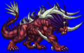
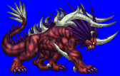
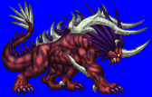
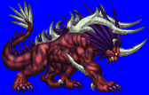

Height: 15 meters + Weight: 1 ton +
Habitat: Marsh Origin: Western Asia
Meaning: Hebrew word for the animal "B'hemah"
Described in the old testament as appearing like a large hippopotomous, water buffalo, rhinoceros, or elephant. In Arab lore, it is called Bahamut. Its bones are made of bronze, its feet as sturdy as bars of iron, and its tail like thick wood. It was made on the sixth day of the world's creation by God. Originally intended to live in the sea, it ended up living on land due to a lack of space in the surrounding waters. In Medieval times, Behemoth was thought to be an agent of the Devil sent to earth to do his bidding.